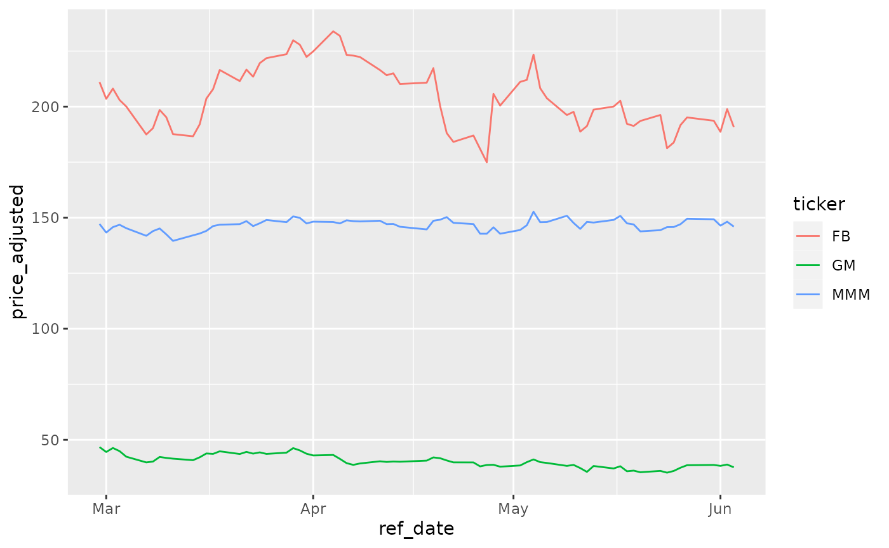

01-Getting Started
Marcelo Perlin
2022-06-01
Source:vignettes/getting-started.Rmd
getting-started.RmdExamples
Here you’ll find a series of example of calls to yf_get(). Most arguments are self-explanatory, but you can find more details at the help files.
The steps of the algorithm are:
- check cache files for existing data
- if not in cache, fetch stock prices from YF and clean up the raw data
- write cache file if not available
- calculate all returns
- build diagnostics
- return the data to the user
Fetching a single stock price
library(yfR)
# set options for algorithm
my_ticker <- 'FB'
first_date <- Sys.Date() - 30
last_date <- Sys.Date()
# fetch data
df_yf <- yf_get(tickers = my_ticker,
first_date = first_date,
last_date = last_date)## ## ── Running yfR for 1 stocks | 2022-05-02 --> 2022-06-01 (30 days) ──## ## ℹ Downloading data for benchmark ticker ^GSPC## ℹ (1/1) Fetching data for FB## ! - not cached## ✔ - cache saved successfully## ✔ - got 21 valid rows (2022-05-02 --> 2022-05-31)## ✔ - got 100% of valid prices -- Well done runner!## ℹ Binding price data## ## ── Diagnostics ─────────────────────────────────────────────────────────────────## ✔ Returned dataframe with 21 rows## ✔ Using 6.0 kB at /tmp/RtmpvUp8pX/yf_cache for cache files## ℹ Out of 1 tickers, you got 1## ✔ You got data on 100% of requested tickers
# output is a tibble with data
head(df_yf)## # A tibble: 6 × 11
## ticker ref_date price_open price_high price_low price_close volume
## <chr> <date> <dbl> <dbl> <dbl> <dbl> <dbl>
## 1 FB 2022-05-02 201. 212. 201. 211. 49915300
## 2 FB 2022-05-03 210. 215. 208. 212. 41556300
## 3 FB 2022-05-04 211. 224. 207. 223. 41375900
## 4 FB 2022-05-05 219. 220. 206. 208. 41129200
## 5 FB 2022-05-06 207. 209. 201. 204. 34733600
## 6 FB 2022-05-09 200. 203. 196. 196. 36303200
## # … with 4 more variables: price_adjusted <dbl>, ret_adjusted_prices <dbl>,
## # ret_closing_prices <dbl>, cumret_adjusted_prices <dbl>Fetching many stock prices
library(yfR)
library(ggplot2)
my_ticker <- c('FB', 'GM', 'MMM')
first_date <- Sys.Date() - 100
last_date <- Sys.Date()
df_yf_multiple <- yf_get(tickers = my_ticker,
first_date = first_date,
last_date = last_date)## ## ── Running yfR for 3 stocks | 2022-02-21 --> 2022-06-01 (100 days) ──## ## ℹ Downloading data for benchmark ticker ^GSPC## ℹ (1/3) Fetching data for FB## ✔ - found cache file (2022-05-02 --> 2022-05-31)## ! - need new data (cache doesnt match query)## ✔ - got 69 valid rows (2022-02-22 --> 2022-05-31)## ✔ - got 100% of valid prices -- All OK!## ℹ (2/3) Fetching data for GM## ! - not cached## ✔ - cache saved successfully## ✔ - got 69 valid rows (2022-02-22 --> 2022-05-31)## ✔ - got 100% of valid prices -- Got it!## ℹ (3/3) Fetching data for MMM## ! - not cached## ✔ - cache saved successfully## ✔ - got 69 valid rows (2022-02-22 --> 2022-05-31)## ✔ - got 100% of valid prices -- Looking good!## ℹ Binding price data## ## ── Diagnostics ─────────────────────────────────────────────────────────────────## ✔ Returned dataframe with 207 rows## ✔ Using 30.5 kB at /tmp/RtmpvUp8pX/yf_cache for cache files## ℹ Out of 3 tickers, you got 3## ✔ You got data on 100% of requested tickers
Fetching daily/weekly/monthly/yearly price data
##
## Attaching package: 'dplyr'## The following objects are masked from 'package:stats':
##
## filter, lag## The following objects are masked from 'package:base':
##
## intersect, setdiff, setequal, union
my_ticker <- 'GE'
first_date <- '2010-01-01'
last_date <- Sys.Date()
df_dailly <- yf_get(tickers = my_ticker,
first_date, last_date,
freq_data = 'daily') %>%
mutate(freq = 'daily')## ## ── Running yfR for 1 stocks | 2010-01-01 --> 2022-06-01 (4534 days) ──## ## ℹ Downloading data for benchmark ticker ^GSPC## ℹ (1/1) Fetching data for GE## ! - not cached## ✔ - cache saved successfully## ✔ - got 3124 valid rows (2010-01-04 --> 2022-05-31)## ✔ - got 100% of valid prices -- Well done runner!## ℹ Binding price data## ## ── Diagnostics ─────────────────────────────────────────────────────────────────## ✔ Returned dataframe with 3124 rows## ✔ Using 642.9 kB at /tmp/RtmpvUp8pX/yf_cache for cache files## ℹ Out of 1 tickers, you got 1## ✔ You got data on 100% of requested tickers
df_weekly <- yf_get(tickers = my_ticker,
first_date, last_date,
freq_data = 'weekly') %>%
mutate(freq = 'weekly')## ## ── Running yfR for 1 stocks | 2010-01-01 --> 2022-06-01 (4534 days) ──## ## ℹ Downloading data for benchmark ticker ^GSPC## ℹ (1/1) Fetching data for GE## ✔ - found cache file (2010-01-04 --> 2022-05-31)## ✔ - got 3124 valid rows (2010-01-04 --> 2022-05-31)## ✔ - got 100% of valid prices -- Time for some tea?## ℹ Binding price data## ## ── Diagnostics ─────────────────────────────────────────────────────────────────## ✔ Returned dataframe with 648 rows## ✔ Using 642.8 kB at /tmp/RtmpvUp8pX/yf_cache for cache files## ℹ Out of 1 tickers, you got 1## ✔ You got data on 100% of requested tickers
df_monthly <- yf_get(tickers = my_ticker,
first_date, last_date,
freq_data = 'monthly') %>%
mutate(freq = 'monthly')## ## ── Running yfR for 1 stocks | 2010-01-01 --> 2022-06-01 (4534 days) ──## ## ℹ Downloading data for benchmark ticker ^GSPC## ℹ (1/1) Fetching data for GE## ✔ - found cache file (2010-01-04 --> 2022-05-31)## ✔ - got 3124 valid rows (2010-01-04 --> 2022-05-31)## ✔ - got 100% of valid prices -- Youre doing good!## ℹ Binding price data## ## ── Diagnostics ─────────────────────────────────────────────────────────────────## ✔ Returned dataframe with 149 rows## ✔ Using 642.8 kB at /tmp/RtmpvUp8pX/yf_cache for cache files## ℹ Out of 1 tickers, you got 1## ✔ You got data on 100% of requested tickers
df_yearly <- yf_get(tickers = my_ticker,
first_date, last_date,
freq_data = 'yearly') %>%
mutate(freq = 'yearly')## ## ── Running yfR for 1 stocks | 2010-01-01 --> 2022-06-01 (4534 days) ──## ## ℹ Downloading data for benchmark ticker ^GSPC## ℹ (1/1) Fetching data for GE## ✔ - found cache file (2010-01-04 --> 2022-05-31)## ✔ - got 3124 valid rows (2010-01-04 --> 2022-05-31)## ✔ - got 100% of valid prices -- You got it runner!## ℹ Binding price data## ## ── Diagnostics ─────────────────────────────────────────────────────────────────## ✔ Returned dataframe with 13 rows## ✔ Using 642.8 kB at /tmp/RtmpvUp8pX/yf_cache for cache files## ℹ Out of 1 tickers, you got 1## ✔ You got data on 100% of requested tickers
df_allfreq <- bind_rows(
list(df_dailly, df_weekly, df_monthly, df_yearly)
) %>%
mutate(freq = factor(freq,
levels = c('daily',
'weekly',
'monthly',
'yearly'))) # make sure the order in plot is right
p <- ggplot(df_allfreq, aes(x=ref_date, y = price_adjusted)) +
geom_point() +
geom_line() +
facet_grid(freq ~ ticker) +
theme_minimal() +
labs(x = '', y = 'Adjusted Prices')
print(p)
Changing format to wide
library(yfR)
library(ggplot2)
my_ticker <- c('FB', 'GM', 'MMM')
first_date <- Sys.Date() - 100
last_date <- Sys.Date()
df_yf_multiple <- yf_get(tickers = my_ticker,
first_date = first_date,
last_date = last_date)## ## ── Running yfR for 3 stocks | 2022-02-21 --> 2022-06-01 (100 days) ──## ## ℹ Downloading data for benchmark ticker ^GSPC## ℹ (1/3) Fetching data for FB## ✔ - found cache file (2022-02-22 --> 2022-05-31)## ✔ - got 69 valid rows (2022-02-22 --> 2022-05-31)## ✔ - got 100% of valid prices -- Looking good!## ℹ (2/3) Fetching data for GM## ✔ - found cache file (2022-02-22 --> 2022-05-31)## ✔ - got 69 valid rows (2022-02-22 --> 2022-05-31)## ✔ - got 100% of valid prices -- Time for some tea?## ℹ (3/3) Fetching data for MMM## ✔ - found cache file (2022-02-22 --> 2022-05-31)## ✔ - got 69 valid rows (2022-02-22 --> 2022-05-31)## ✔ - got 100% of valid prices -- Well done runner!## ℹ Binding price data## ## ── Diagnostics ─────────────────────────────────────────────────────────────────## ✔ Returned dataframe with 207 rows## ✔ Using 642.5 kB at /tmp/RtmpvUp8pX/yf_cache for cache files## ℹ Out of 3 tickers, you got 3## ✔ You got data on 100% of requested tickers
print(df_yf_multiple)## # A tibble: 207 × 11
## ticker ref_date price_open price_high price_low price_close volume
## * <chr> <date> <dbl> <dbl> <dbl> <dbl> <dbl>
## 1 FB 2022-02-22 202. 207. 200. 202. 39852400
## 2 FB 2022-02-23 204. 207. 198. 198. 44481400
## 3 FB 2022-02-24 191. 208. 190. 208. 49957200
## 4 FB 2022-02-25 205. 211. 203. 210. 37627600
## 5 FB 2022-02-28 208. 213. 207. 211. 34239800
## 6 FB 2022-03-01 210. 212. 202. 203. 27094900
## 7 FB 2022-03-02 205. 209. 202. 208. 29452100
## 8 FB 2022-03-03 209. 209. 201. 203. 27263500
## 9 FB 2022-03-04 202. 206. 199. 200. 32130900
## 10 FB 2022-03-07 201. 201. 187. 187. 38560600
## # … with 197 more rows, and 4 more variables: price_adjusted <dbl>,
## # ret_adjusted_prices <dbl>, ret_closing_prices <dbl>,
## # cumret_adjusted_prices <dbl>
l_wide <- yf_convert_to_wide(df_yf_multiple)
names(l_wide)## [1] "price_open" "price_high" "price_low"
## [4] "price_close" "volume" "price_adjusted"
## [7] "ret_adjusted_prices" "ret_closing_prices" "cumret_adjusted_prices"
prices_wide <- l_wide$price_adjusted
head(prices_wide)## # A tibble: 6 × 4
## ref_date FB GM MMM
## <date> <dbl> <dbl> <dbl>
## 1 2022-02-22 202. 46.8 145.
## 2 2022-02-23 198. 46.4 143.
## 3 2022-02-24 208. 46.3 142.
## 4 2022-02-25 210. 47.4 149.
## 5 2022-02-28 211. 46.7 147.
## 6 2022-03-01 203. 44.5 143.